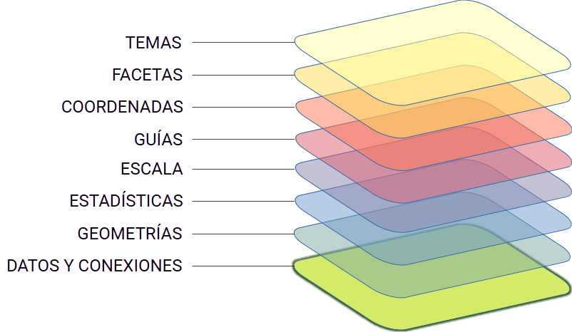

library("altair")
vega_data <- import_vega_data()
chart <-
alt$Chart(vega_data$cars())$
mark_point()$
encode(
x = "Horsepower:Q",
y = "Miles_per_Gallon:Q",
color = "Origin:N"
)
chart4 Gramática de gráficos
Este capítulo presenta brevemente el paradigma de grammar of graphics, adoptado por varias bibliotecas y paquetes de visualización de datos en diferentes lenguajes de programación, incluyendo el paquete ggplot2 que será el principal protagonista en el Capítulo 5.
4.1 Origen y propósito
Wilkinson (2005) introdujo el concepto de gramática de gráficos (grammar of graphics) para organizar y estructurar los elementos de diseño y composición de gráficos para visualización de datos. Desde su publicación, este paradigma de referencia ha influenciado el diseño e implementación de numerosos paquetes y librerías para visualización de datos, incluyendo el paquete ggplot2 (Wickham, 2010).
La Tabla 4.1 muestra la correspondencia entre los elementos de la gramática de gráficos propuesta por L. Wilkinson y la gramática por capas implementada por H. Wickham en su paquete ggplot2.
| GPL (Wilkinson, 2005) | ggplot2 (Wickham, 2010) |
|
|---|---|---|
| DATA | Defaults | |
| TRANS | Data Mapping |
|
| ELEMENT |
|
|
| SCALE GUIDE |
Scale | |
| COORD |
|
|
| FACET |
|
|
Veamos primero algunos de los elementos de la gramática de gráficos original que deben ser especificados para componer un gráfico (Wilkinson, 2005):
Datos: conjunto de operaciones sobre los datos que generar variables (atributos) de los datasets que van a ser representados gráficamente.
Transformaciones (abreviado como trans): operaciones aplicadas sobre las variables antes de su inclusión en el gráfico (por ejemplo, cálculo de un ranking, ordenación, etc.).
Elementos: componentes gráficos (puntos, líneas, …) y sus atributos estéticos (color, tamaño,…).
Escala: transformaciones aplicadas a la escala de representación de los datos como, por ejemplo, cambiar a escala logarítmica.
Guías: una o más guías de interpretación (ejes, leyenda, …).
Sistema de coordenadas (abreviado como coord): elección de un sistema de coordenadas (cartesianas, polares, etc.).
Facetas: son cuadros en los que componemos varios graficos de forma que conjuntamente permitan comparar unos con otros.
No obstante, en el libro de Wilkison también se mencionan otros elementos constructivos, tales como atributos estéticos, geometrías o estadísticos, que también aparecen en la propuesta de H. Wickham.
4.2 Una implementación por capas
La principal novedad introducida por la implementación de H. Wickham de este concepto en su paquete ggplot2 es la organización de los elementos para componer el gráfico en una estructura por capas, altamente flexible y versátil. La Figura 4.1 muestra un esquema conceptual de los diferentes elementos que veremos en el Capítulo 5.

ggplot2.
Esta estructura permite construir rápidamente incluso gráficos de elevada complejidad que mezclan o sobreponen diferentes componentes para representar la información. El hecho de que el paquete ggplot2 se haya intentando portar o conectar (mediante wrappers) al lenguaje Python en múltiples ocasiones da buena cuenta de las ventajas de dicho paquete respecto de otras opciones.
4.3 Otras librerías y paquetes
Existen otros paquetes en R para realizar gráficos. Uno de los más destacados y que, en su momento, también incorporó avances importantes y potentes (como el soporte para crear facetas) es lattice (Sarkar, 2008). Sin embargo, desde su aparición ggplot2 no ha cesado de ganar adeptos y, a día de hoy, es prácticamente la opción de referencia en R para creación de gráficos atractivos e informativos.
4.3.1 Otros lenguajes: Python
Existe un paquete en Python llamado
lets-plot(https://lets-plot.org/python/index.html), que ha portado gran parte de la funcionalidad y la API deggplot2al entorno Python (no hay más que echar una rápida ojeada a la documentación para comprobar que el abanico de opciones que ofrece es muy amplio).Otro proyecto muy interesante y, curiosamente, también bastante desconocido para una parte de los programadores en Python es Vega-Altair, o simplemente
altair. Es una biblioteca de visualización declarativa para Python que se construye sobre la gramática de gráficos del proyecto Vega-Lite. El objetivo principal de esta gramática es simplificar la creación de muchos elementos dinámicos e interactivos pensados, esencialmente, para mostrarse en documentos HTML. De hecho, el proyecto proporciona un editor de gráficos (Vega Editor), neutral a cualquier lenguaje de programación, en el que podemos construir nuestro gráfico para luego integrarlo en un lenguaje que cuente con un paquete o librería que pueda interpretar esta gramática. El proyecto fue creado y está liderado por el Interactive Data Lab que dirige el especialista en visualización de datos Jeffrey Heer.
El zoo de las visualizaciones de datos
El profesor Heer es uno de los mayores especialistas en visualización de datos a nivel mundial y una de las personas que más ha contribuido al avance de este área de conocimiento en los últimos 15 años. Uno de sus mejores artículos, lectura imprescindible para cualquiera que quiera adquirir una idea precisa de la amplitud del campo de la visualización de datos, es el artículo “A Tour Through de Visualization Zoo” (Heer et al., 2010), disponible en este enlace: https://homes.cs.washington.edu/~jheer/files/zoo/; o en la versión oficial publicada en ACM Queue.
El paquete altair en R
Al igual que ocurre con ggplot2, pero en sentido inverso, el proyecto Vega-Altair también se está volviendo accesible en R, gracias al paquete altair, que emplea otro paquete R llamado reticulate para generar una interfaz a la API de Vega-Altair en Python. El paquete reticulate no suele introducir grandes retardos para hacer la “traducción automática” entre las dos APIs, por lo que esta opción parece bastante atractiva si queremos explorar las posibilidades que ofrece la gramática de Vega-Lite en R.
Eso sí, hay que tener cuidado porque, por ahora, la versión de Altair soportada es la 4.2.0, por lo que conviene instalar exactamente dicha versión de Vega-Altair en Python en un entorno virtual y usando un gestor de paquetes como pip o conda.
altair en R.